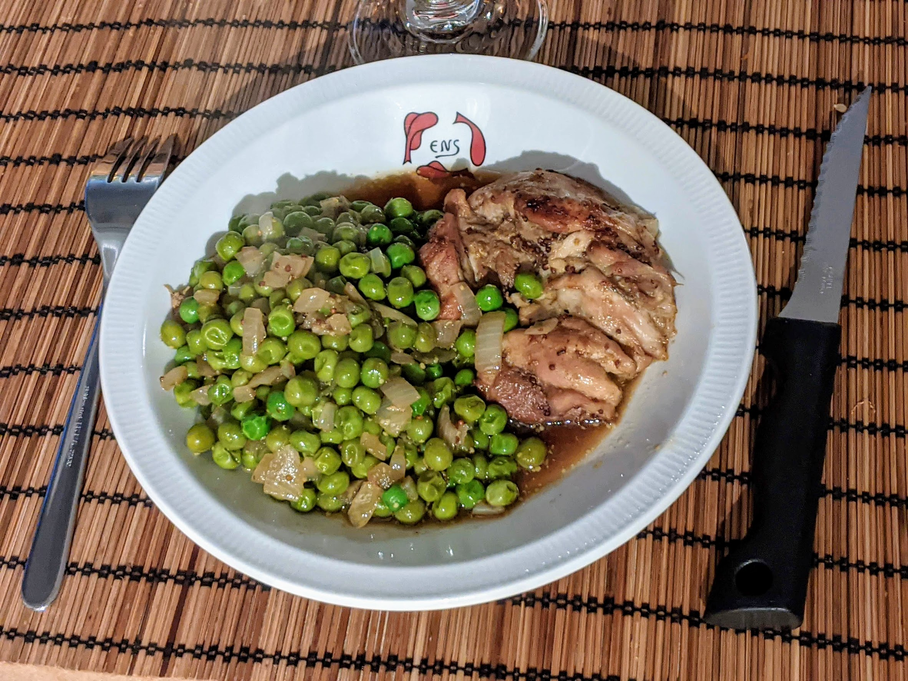

Poulet à l'irlandaise

Pour quatre personnes :
- Quatre blancs de poulet
- Un oignon
- Une échalote
- Une bouteille (ou une canette) de Guinness
- Une grosse cuillère à soupe de moutarde à l'ancienne
- 600g de petits pois surgelés
- Paprika
- Huile d'olive, sel, poivre.
- Faire dorer le poulet dans de l'huile d'olive, à feu vif, jusqu'à ce qu'il ait pris une jolie couleur brune (8 minutes par côté, à peu près).
- Faire préchauffer le four à 180°C. Transférer le poulet dans un plat allant au four. Émincer oignon et échalote et les faire fondre dans la poêle avec les sucs du poulet.
- Ajouter dans la poêle bière, moutarde, mélanger en raclant ce qui a pu accrocher un peu, et ajouter le tout dans le plat à four. Enfourner une demi-heure.
- Quand le poulet sort du four, récupérer le jus et faire cuire les petits pois dedans à feu vif jusqu'à ce qu'ils soient tendres (environ 5 minutes, la sauce doit épaissir un peu).
- Servir le tout bien chaud.
Remarque : on peut aussi servir ça avec une purée et diviser la quantité de petits pois par deux.
Retour à la liste des recettes